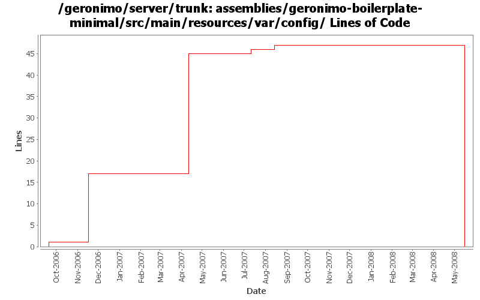

[root]/assemblies/geronimo-boilerplate-minimal/src/main/resources/var/config

| Author | Changes | Lines of Code | Lines per Change |
|---|---|---|---|
| Totals | 13 (100.0%) | 82 (100.0%) | 6.3 |
| djencks | 3 (23.1%) | 31 (37.8%) | 10.3 |
| akulshreshtha | 3 (23.1%) | 30 (36.6%) | 10.0 |
| kevan | 1 (7.7%) | 17 (20.7%) | 17.0 |
| gdamour | 1 (7.7%) | 2 (2.4%) | 2.0 |
| jdillon | 3 (23.1%) | 1 (1.2%) | 0.3 |
| dwoods | 2 (15.4%) | 1 (1.2%) | 0.5 |
Drop -minimal suffix on the boilerplate, since we only have one of these now, the suffix is meaningless
0 lines of code changed in 2 files:
GERONIMO-3391 Use the config-substitutions.properties for the Deployer remoteDeployAddress settings
1 lines of code changed in 1 file:
GERONIMO-2735 clean up config substitutions
29 lines of code changed in 1 file:
* Add a Cluster GBean such that we can implement cluster aware services, for
instance a cluster aware deployer;
* When a clustered Web-application is deployed, we now deploy it to a Cluster
by specifying its name. The former mechanism was to deploy it to a
DispatcherHolder;
* Add Node.getJMXConnector such that clients can get a JMXConnector connected
to the target Node instance. Host and port connection details of this
JMXConnector are retrieved via the clustered service proxying/invocation of
WADI; and
* Use a configuration substitution mechanism to simplify the configuration of
node names.
2 lines of code changed in 1 file:
GERONIMO-3272 eliminate the geronimo-transaction-jta11 module, we are entirely on jta11 now. Also refix logging error for non-NamedXAResource. Also make jpa stuff use spec interfaces and not drag ejb spec into the tm
1 lines of code changed in 1 file:
GERONIMO-3011 Revert default Naming Port to 1099, and see if it is necessary to change it
1 lines of code changed in 1 file:
GERONIMO-3011 Change default RMINaming port to 1098
Added system property admin.disabled=true
Removed PluginBootstrap, it was used by Maven1 build
1 lines of code changed in 1 file:
GERONIMO-2735 Added portOffset to config.xml
Updated config-substitutions.properties in boilerplate-minimal
GERONIMO-3011 Added port configuration for EJBNetworkService, ActiveMQ.stomp.default, and ActiveMQ RA
28 lines of code changed in 1 file:
GERONIMO-2941 New config-substitutions.properties file is missing from Tomcat assemblies. Added a version of the file with everything commented out to the geronimo-boilerplate-minimal assembly so every other assembly will inhert it, but can provide their own to override it like jetty6-jee5 is doing.
0 lines of code changed in 1 file:
GERONIMO-2537 Integrating patch supplied by Jay McHugh. Thanks Jaymvn -Ptools geronimo:start! Adds apache src header to files that were missing appropriate license information. This is everything except applications/console.
17 lines of code changed in 1 file:
std props
1 lines of code changed in 1 file:
GERONIMO-2409 add missing file so servers will start. Included some basic instructions
1 lines of code changed in 1 file: